Planes Menu:
This is what the Planes menu looks like:
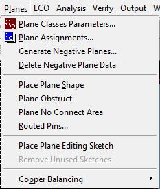
(1-planes_menu.jpg)
There are many useful functions from this menu
The first option, Plane Classes Parameters, opens a window that looks like the following:
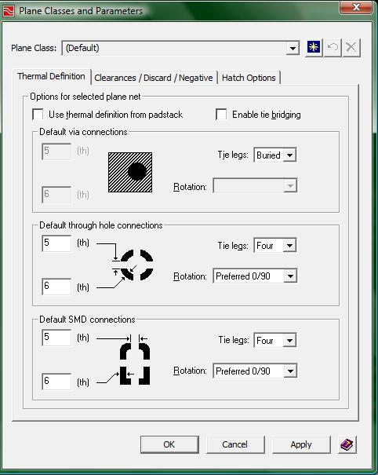
(2-plane_classes.jpg)
This menu is useful if you require specific dimensions for your thermals that connect with your planes. Unless you are told specific dimensions for your design, leave this window alone.
The next option in the planes menu is Plane Assignments. Clicking this will open up a menu that resembles the following:
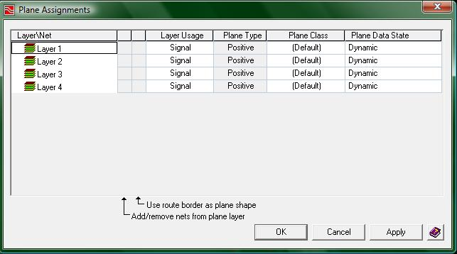
(3-plane_assignments.jpg)
When you open this window you will need to make some modifications to fit the kind of board you will be making. You will be using a 4 layer board, so if you have more than 4 layers you will need to make sure to follow the forward annotation tutorial more closely.
For boards made in the ECE 189 class, you will have a top layer for signals, a power plane, a ground plane, and a bottom layer for signals. This means that layers 2 and 3 need to be changed from signal layers to planes. This is done by clicking on the word “Signal” in the column “Layer Usage”. This will open up a drop box that has two options, signal or plane. Change layers 2 and 3 to planes.
Now your window should looks like this:
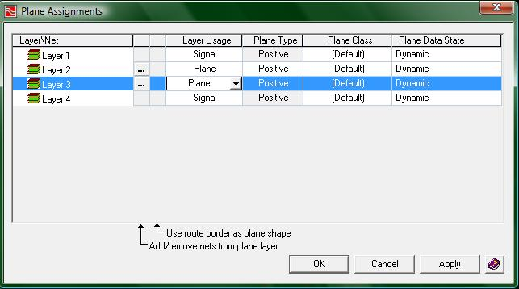
(4-plane_assignments_2.jpg)
If you will take notice to the small buttons that now appear in the row for layer 2 and for layer 3. These are browse buttons allowing you to connect a specific signal to that plane. Use one of the layers for the GND plane by pressing the “…” button and getting the following window:
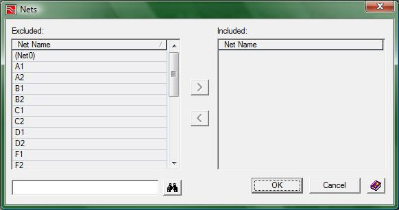
(5-net_to_plane.jpg)
The two buttons in the middle allow for nets to be moved from the excluded field to the included field.
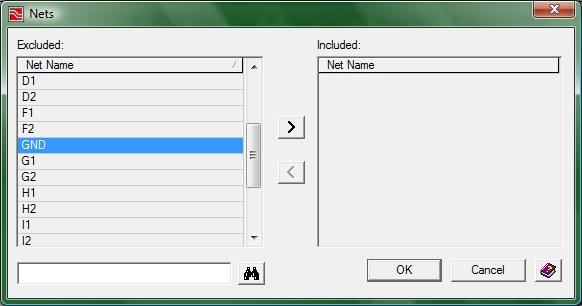
(6-GND_plane.jpg)
If you highlight a net name in the excluded field, you will be given the option of placing it in the included field. If you highlight a name in the included field you will be able to place it in the excluded field.
Move the GND connection over and then press OK to get the following screen:
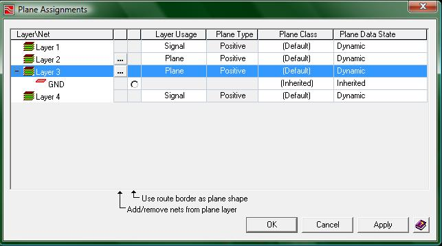
(7-gnd_assigned.jpg)
Now we have connected the signal GND to a plane. This will change the way your signals are routed now as well because all of your GND signals will not try and connect to one another, but rather, will just via to the new GND plane.
The power plane is where there can be some deviation. Some projects will only require one specific voltage, some projects will require several different voltages, and even some projects will require AC and DC power on the power plane. How do you tell Expedition that you are going to split up the second layer into different power zones? For now you will need to specify which nets are going to be connected to the power plane.
If you only need one voltage to your power plane, just connect VCC to one of the layers and continue on. Your Plane assignments window should look like the following as well
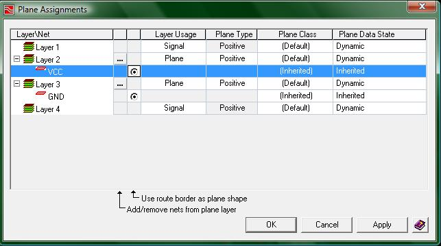
(8-finished_assigning.jpg)
The two circles that I have placed a “check” within are to give your planes shape. Since you have no need to customize your power plane and ground planes, just make them the maximum size and get on with making your board. Also make note that the Plane Data State is Dynamic. This means the planes automatically update whenever a change occurs to your project.
Now if you have multiple voltages connected to your power plane, it gets a little bit more difficult. Do not fret though as it not very difficult.
If you would like to get your hands dirty and follow along, download this project, open it up, and get yourself to the following image:
NOTE: When using only 1 kind of voltage on your power plane it is fine to call the power source VCC, VDD, or even VSS because those particular names are not tied to any one kind of voltage, but when you have multiple voltages on your power plane, you should consider a different approach. In the following examples VCC and VDD were used to differenciate between two different voltages on the same plane, however, you should consider using a different naming scheme to identify the voltage carried by that particular plane. For Example, P5v could be used to indicate a power plane of 5 volts and then using P3v3 could be used to indicate a power plane of 3.3 volts. It is highly advised to assume a naming scheme like P5v and P3v3 verses using VCC and VDD. DO NOT USE THE SAME NAMING SCHEME AS BELOW IF YOU HAVE MULTIPLE POWER PLANES. Accidents can occur where you connect a part intended to be powered by a 3.3v plane but because you used VCC and VDD to name each plane, you connected it to the 5v plane and the chip got fried.
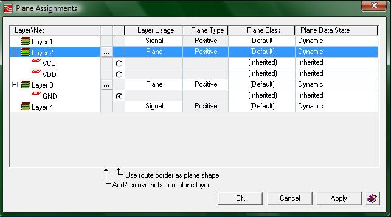
(9-multi_power.jpg)
When your plane assignments window looks like the previous image, click the apply button, and then click the OK button.
Now your sheet should look something like this:
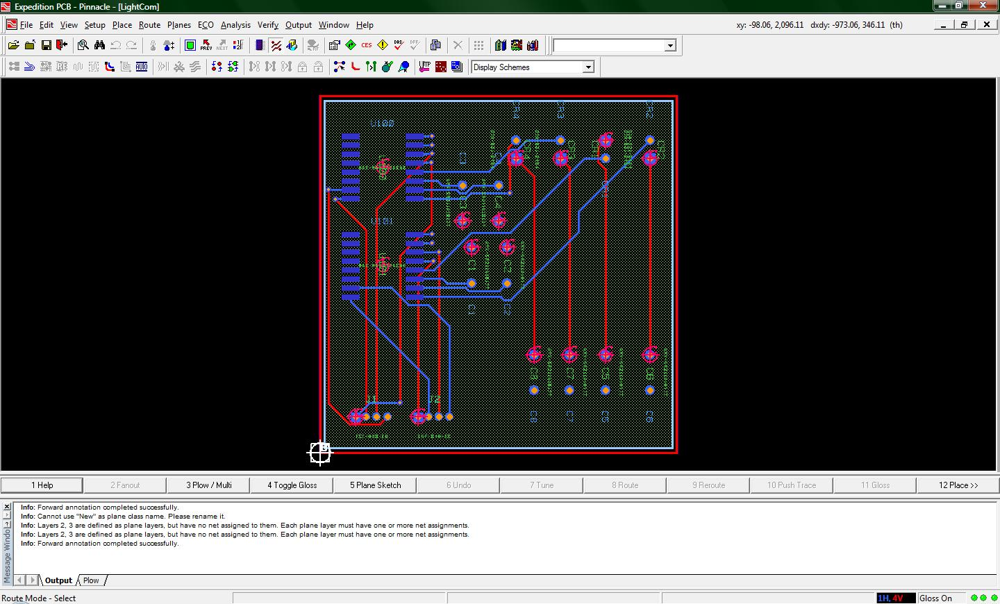
(10-gnd_plane_visible.jpg)
The green color behind the chips and routes is the GND plane. You can open up the display control window to turn its visibility off to make the next section easier. However, do not turn off the Power plane's visibility.
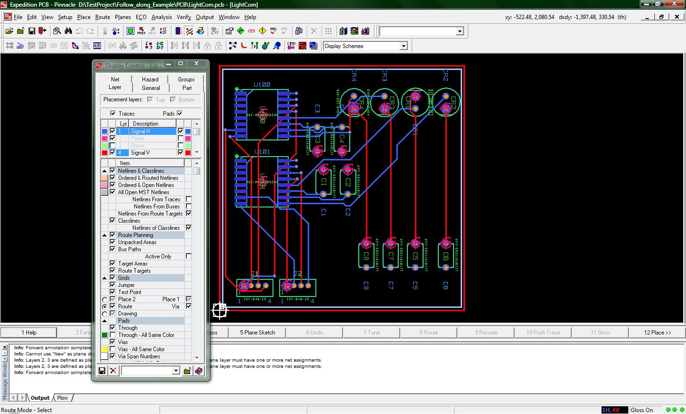
(11-display_control.jpg)
Now we are going to draw in the VDD and the VCC power planes. This is done by using another option from the planes menu, specifically the option “Place Plane Shape”. By clicking this option you will be placed in a draw mode wherein a grid will show up on the screen to guide you. Left click on where you want to start drawing one of the planes and then left click once again when you have made one side of the plane. The following image shows that I have drawn two of the 4 edges to my first plane. The third edge is technically still attached to my mouse but the screen shot makes it look like I have drawn three edges.
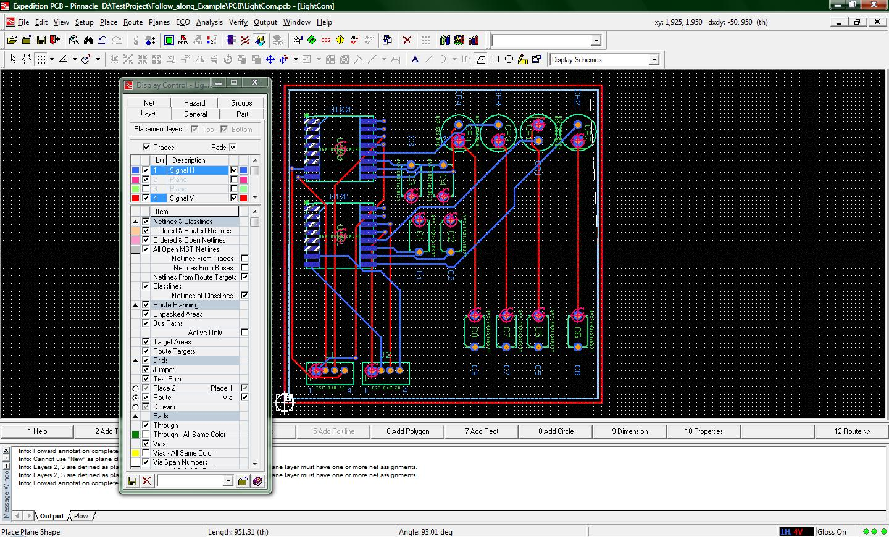
(12-drawing_VCC.jpg)
When you have finished drawing a rectangular shape, it will become shaded a blue color.
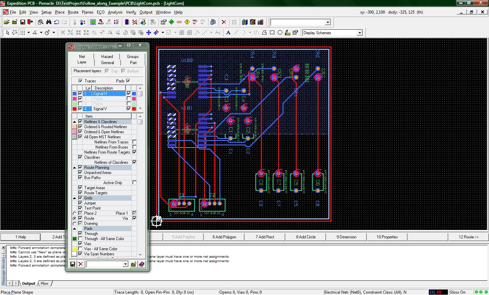
(13-vcc_drawn.jpg)
Since the shading is in blue, Expedition PCB currently thinks the plane you have just drawn is on Layer 1, which is not where you want your plane to be. Double left click on the plane you drew to open up the properties window or click the properties button at the top of the screen. The properties window will look like this
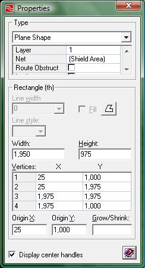
(14-properties_window.jpg)
Most of the information on this window you will not need to worry about, however if you notice just underneath the topmost drop down box you will see the property “Layer” with a value of “1”. Click on the value field and change the value to “2P”. Now your properties window should look like this, and in the background the color of the plane you drew shall change color to red.
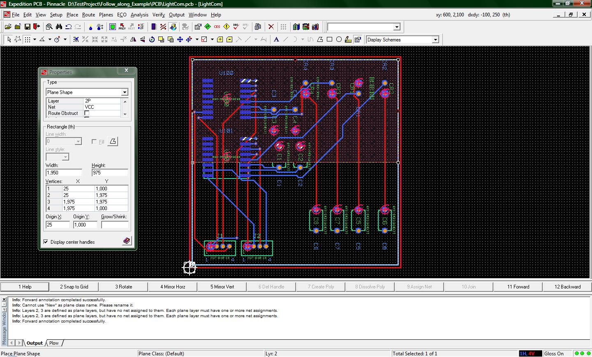
(15-vcc_plane.jpg)
You now have a shape to your VCC plane as well as half of your power plane specified. Click on the Place Plane Shape option again to draw in the VDD plane.
NOTE: the VCC and VDD shapes, since they will both exist on the same power plane, will not be able to overlap. Though they are distinctly two different shapes here in Expedition PCB, note that they are actually going to be implemented on one layer of copper. If your two plane shapes are overlapped, then the copper region for VCC will be connected(!) with the copper region for the VDD plane. This condition, of course, cannot persist for your project because the two differing voltage sources would be shorted together ... leading to a quick board death.
If your board requires the use of multiple voltages on the power plane and you are worried whether Expedition has interconnected the two plane shapes, do not fret. There is an option you can enable to make sure that your two plane shapes never connect with one another on the same layer. In the properties window when you have a plane shape "in focus", you will notice that the same field that contains the layer information for that plane also contains a check box labeled “Isolate Plane”. Enable this option for both planes and you will not have to worry about the two power planes being accidentally connected to each other. Expedition PCB will always maintain the minimum design rule distance between the two planes.
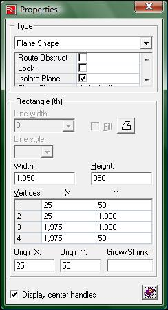
(16-isolate_plane.jpg)
Just because I have drawn two rectangular power planes does not mean that power planes are restricted to purely rectangular shapes. You can use any polygon you wish to draw your power planes, however, certain fabrication houses have rules about what they can and cannot do, so check before you create a board with unconventional triangle or other power planes.